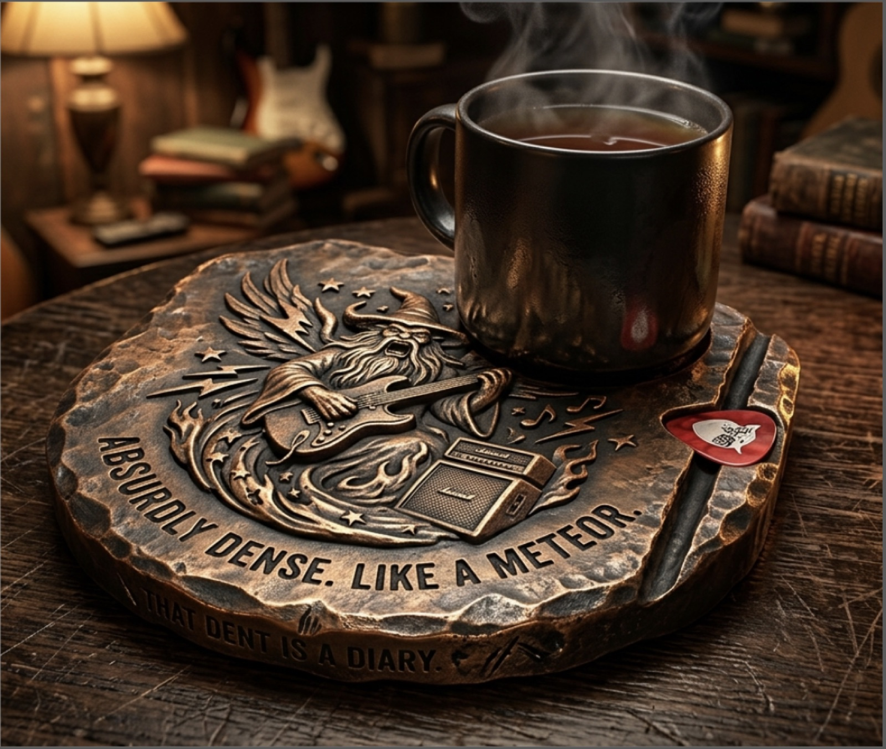

04 M — Sheet 01 / 09
Use Generative AI to design a drink coaster for a client.

For this activity we designed a custom drink coaster for a specific client, using generative AI through the whole process: to brainstorm interview questions, to simulate the interview itself, and to visualize the final design. I worked with my partner Faisal in Class Group #13.
We started with the interview questions. We wanted to learn enough about the person to design something that felt specific to them, so we mixed the basic facts you could ask anyone with the more obscure details that are harder to dig up. Then we primed Claude Opus 5 to take on our client's personality, told it how we wanted it to answer, and ran the interview in character. At the end we asked for a summary of the conversation and pulled our design criteria out of that.
The finished coaster has a heavy, forged look: worn bronze with a rough, chipped edge, like it was cast a long time ago and knocked around ever since. The face shows a long-bearded wizard playing an electric guitar next to an amplifier, with lightning bolts and stars around him, and a guitar pick sits in a channel along one edge. Two lines are engraved into it: "ABSURDLY DENSE. LIKE A METEOR." around the rim, and "THAT DENT IS A DIARY." below it.
What surprised me most was how much the emotional side of the client shaped the design. I assumed the useful material would be the concrete facts, but the emotional part of how a person thinks turned out to matter a lot more than I expected. How we feel is very important.
Tools used: Claude Opus 5 for the client interview, because its reasoning is strong and it stays objective, and Gemini 3.1 Pro to generate the image of the coaster.